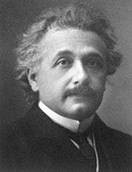
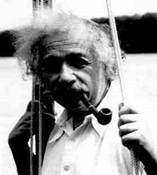
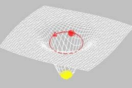
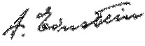
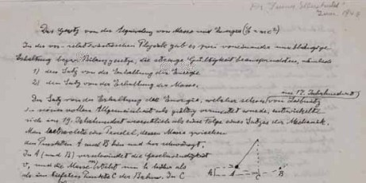

Thủ bút bằng tiếng Ðức của một bài báo đăng bằng tiếng Anh về E = mc² tựa đề: " The Most Urgent Problem of Our Time". Ðăng trong tờ Science Illustrated, 1946.
Sau khi Thế Chiến Thứ Hai chấm dứt, có một nhà đại bác học được toàn thế giới ca ngợi về một phương trình lừng danh nhất của Khoa Học, đó là phương trình cho biết năng lượng của vật chất: E=mc 2 . Trong hàng chục năm trời, E = mc 2 vẫn chỉ là đề tài của các cuộc tranh luận về mặt lý thuyết, nhưng sự san bằng thành phố Hiroshima vào năm 1945 do quả bom nguyên tử đã chứng minh sự thật của phương trình đó.
Trước lời ca tụng, trước vinh quang rực rỡ, Albert Einstein, tác giả của phương trình lừng danh kể trên lại, giữ một bộ mặt thẹn thùng, xa lạ. Sự quảng cáo thanh danh đã quấy nhiễu ông suốt đời nhưng tất cả đều bị ông coi thường, lãnh đạm. Einstein chỉ khao khát độc nhất sự trầm lặng để có thể suy nghĩ và làm việc.